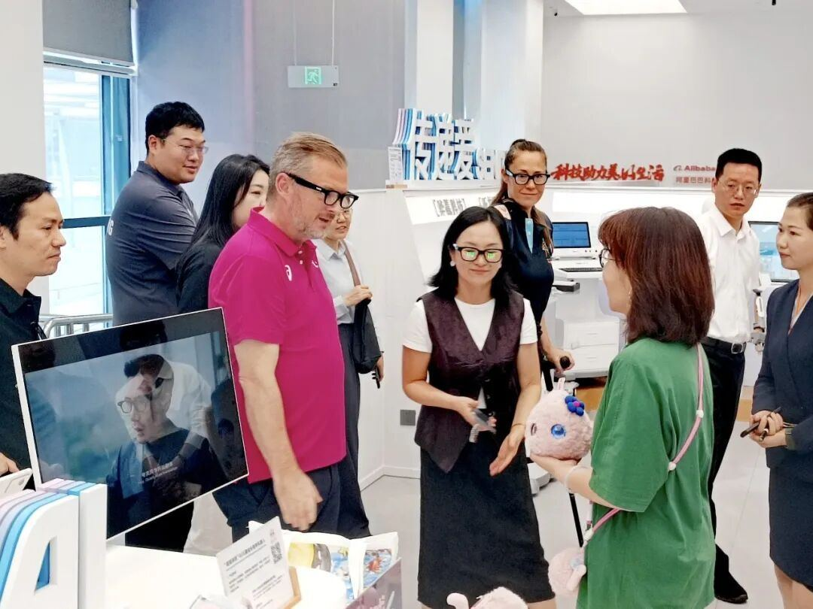
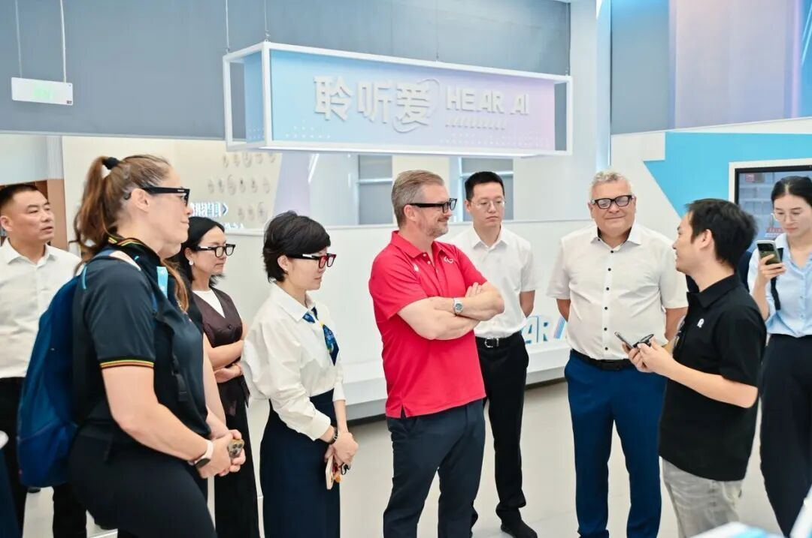
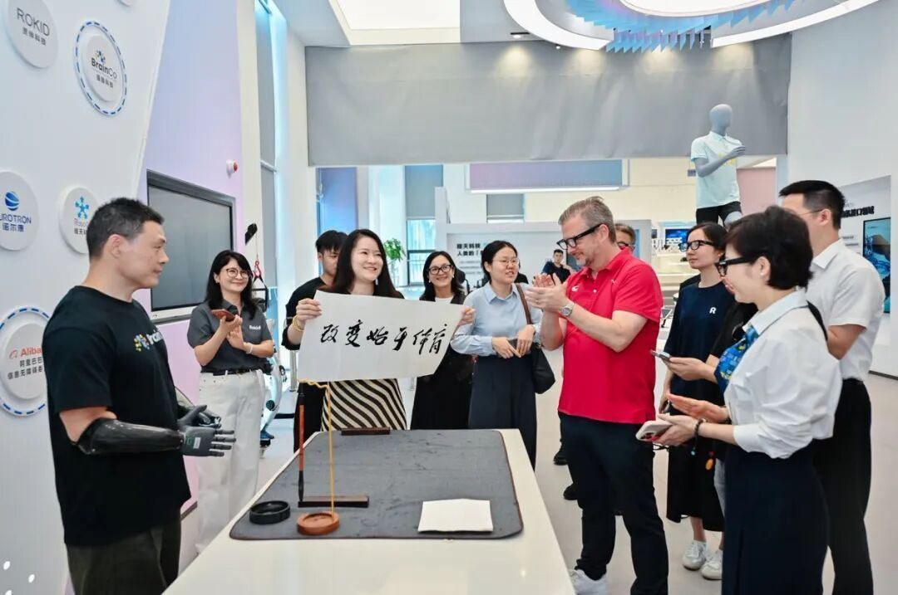
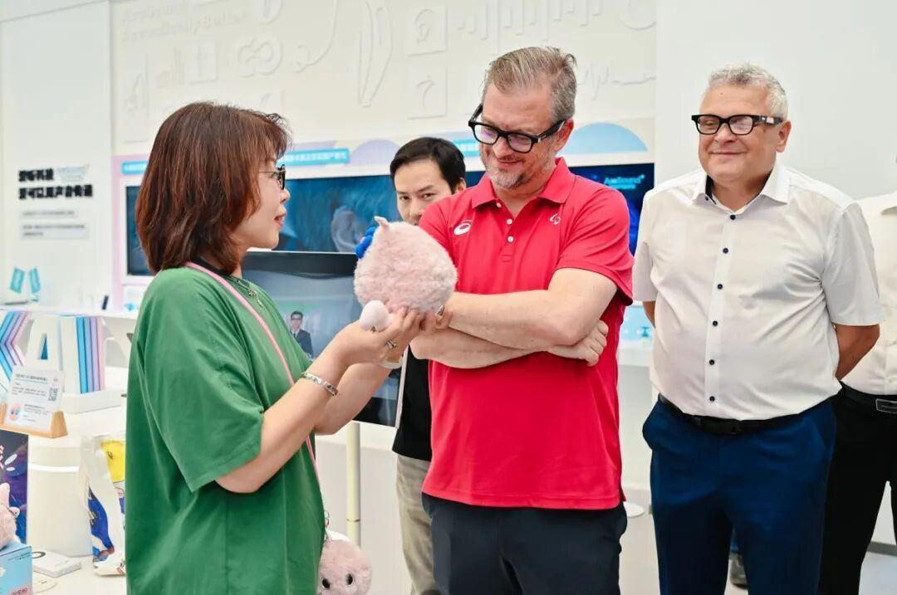
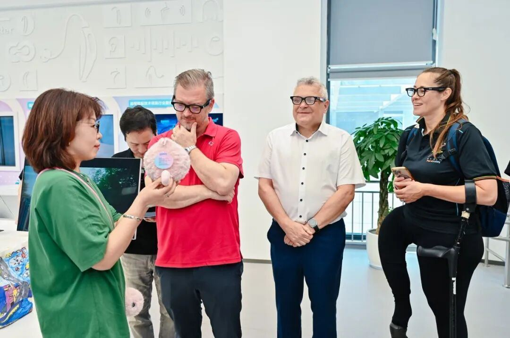
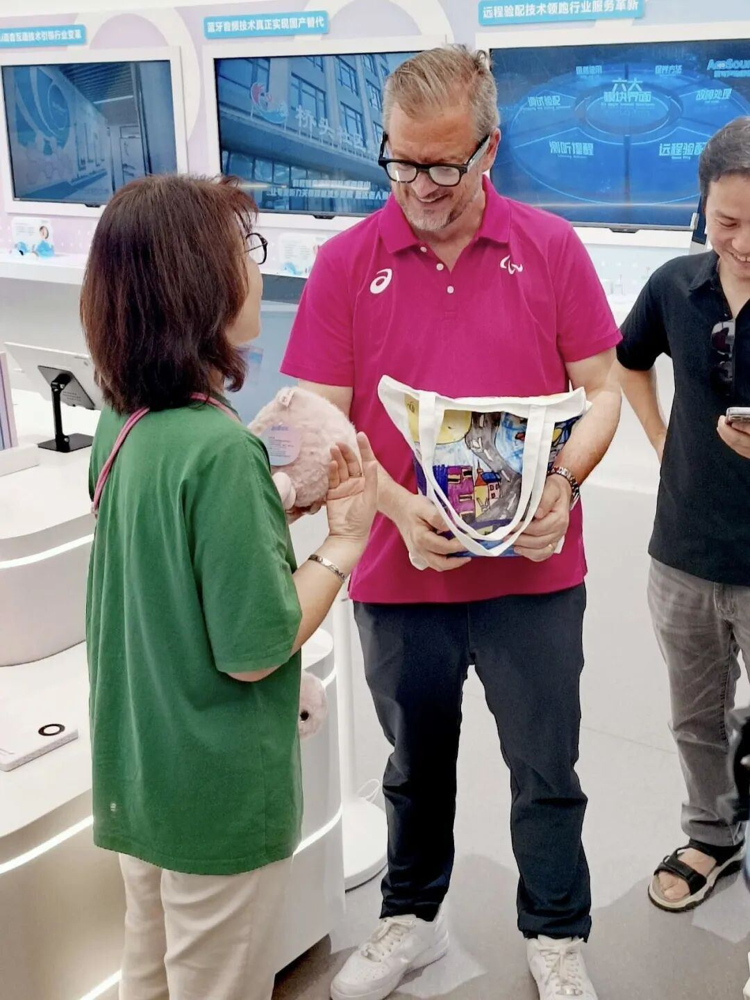
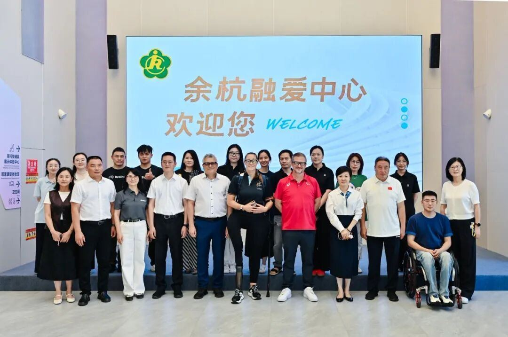

参观现场，⼯作⼈员依次向安德鲁·帕森斯主席⼀⾏演⽰各企业核⼼技术成果，从治愈系⽑绒AI陪伴机器⼈，到辅助视障出⾏的AR智能眼镜，再到改善神经发育的脑机康复设备，多元科


技⽅案覆盖残障⼈⼠康复、⽣活、⼼理全维度，获得考察团持续关注。
萌⼒AI⽆障碍对话！超级球球英⽂交互惊艳国际残奥委会主席在超级有爱产品展⽰区，考察团将⽬光聚焦软萌的粉⾊超级球球AI⼉童成⻓陪伴机器⼈。
⽆需⼈⼯引导，超级球球主动⽤流利英⽂完成⾃我介绍，灵动灯光腮红搭配软糯声线，瞬间吸引安德鲁·帕森斯主席的兴趣。
安德鲁·帕森斯提问超级球球安德鲁·帕森斯主动向球球提问:What can you do for the children？超级球球以稚嫩治愈的英⽂声⾳完整作答，清晰介绍⾃⾝四⼤核⼼能⼒:Listen patiently tochildrens concerns, empathize and accept all negative emotions, positively guide andrelieve psychological stress, and train consistently to shape a stable character.完整复刻专业⼉童⼼理疏导流程。

全程⽆障碍双语交互、专为⼉童定制的情感AI模型，让考察团直观感受到轻量化⽆屏幕AI硬件独特的陪伴价值。
深耕特殊⼉童关怀专属功能收获国际残奥委会⾼度认可交互结束后，超级有爱销售总监⾼丽春与安德鲁·帕森斯主席展开深度交流。主席重点关切：这款AI产品针对残障、特殊⼉童是否设有专属功能？
⾼丽春与安德鲁·帕森斯⾯对⾯沟通、交流产品⾼丽春总监向国际残奥委会主席介绍，超级有爱已落地三类特殊⼉童专项服务：针对孤独症⼉童优化低刺激温和交互模式并布局社区公益站点；推出⼤病⼉童专属疗愈版本舒缓就医焦虑；
⻓期⾯向特教机构、社区免费提供AI⼼理陪伴，低成本填补特殊⼉童⼼理陪伴空⽩。
听完介绍，安德鲁·帕森斯主席对超级有爱聚焦特殊⼉童⼼理健康的布局表达⾼度认可。他表⽰，残障⼉童、孤独症孩⼦往往更容易陷⼊情绪孤独，缺少稳定、包容的倾诉对象，⽽AI陪伴产品恰好提供了⽆压⼒、全天候的情绪出⼝，是⾮常有温度、有社会价值的科技创新。

⼀份特殊礼物孤独症⼉童画作承载科技善意参观尾声，我们向安德鲁·帕森斯主席赠送专属伴⼿礼 超级球球机器⼈，收纳它的环保布袋也极具特殊意义：布袋上全部图案，均来⾃我们⻓期扶持帮扶的孤独症⼉童原创绘画作品。
安德鲁·帕森斯⼿持孤独症⼉童⼿绘布袋⼩⼩布袋承载双重⼼意：⼀⽅⾯展⽰孤独症孩⼦丰富纯粹的内⼼世界，让更多⼈看⻅特殊⼉童的创作天赋；另⼀⽅⾯也传递超级有爱 “科技向善” 的初⼼ 不⽌⽤AI治愈孩⼦，更持续

为特殊⼉童提供展⽰、表达⾃我的平台。安德鲁·帕森斯主席接过礼品后，仔细欣赏布袋上的⼿绘图案，对这份充满⼈⽂关怀的礼物连连称赞。
以AI温暖童⼼共筑全球⼉童⼼理健康守护⽹本次国际残奥委会主席⼀⾏的参观交流，是国际助残权威机构对国内⼉童情感AI、助残科创赛道的⼀次重要肯定。
当下，⼉童⼼理健康已是全球性议题，孤独症、残障、困境⼉童的情绪孤独问题亟待被看⻅、被关怀。传统⼼理咨询资源稀缺、地域分配不均，很多孩⼦缺少稳定的情绪陪伴渠道。⽽以超级球球为代表的轻量化情感AI产品，打破时间、空间限制，⽤低⻔槛、⾼包容的交互⽅式，为全球⼉童搭建24⼩时⼼灵树洞。
全员合影未来，超级有爱将持续深耕三⼤⽅向：优化特殊⼉童专属AI疗愈功能、拓展公益合作渠道；开展国际交流，输出国内⼉童情绪陪伴AI⽅案⾛向海外；持续扶持特殊⻘少年艺术创作，多⽅共建包容友好的⼉童成⻓环境。

科技不⽌改变⽣活，更治愈⼼灵。我们期待与全球助残组织、⼼理机构、科创伙伴携⼿，⽤有温度的⼈⼯智能，守护每⼀位特殊⼉童、每⼀个孩⼦的⼼理健康，让温柔陪伴跨越国界，抵达世界每⼀个⻆落！